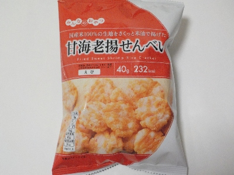
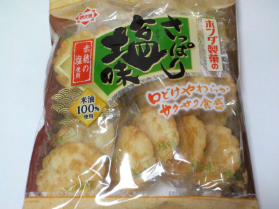

ホンダ製菓の甘海老揚せんべい
2024/04/23

小さいけどふっくらと厚みのある揚げせんべいです。
エビ味もあるし、油で揚げた風味もあるし、塩味も効いてて美味しかったです。
一袋があっという間になくなってしまった。
埼玉県川越市府川1313-2
2024/04/23

小さいけどふっくらと厚みのある揚げせんべいです。
エビ味もあるし、油で揚げた風味もあるし、塩味も効いてて美味しかったです。
一袋があっという間になくなってしまった。
2022/12/20

ホームページによると商品名は16枚さっぱり塩味のようです。〇〇せんべいとか、〇〇揚って名前じゃないんですね。
サクサク感が気持ちいい煎餅です。揚げたての天麩羅の衣よりも軽くてサクサクだと思いました。
シンプルな塩味なので油で揚げた感じがよくして美味しいです。
ちょっと天婦羅が食べたくなりました。